For SharePoint 365, also known as "Modern SharePoint", web parts pages have been modified by Microsoft to preclude the use of the SharePoint Picker.htm web part. The component, therefore, won't work for those SharePoint Installations.
For SharePoint 365, also known as "Modern SharePoint", web parts pages have been modified by Microsoft to preclude the use of the SharePoint Picker.htm web part. The component, therefore, won't work for those SharePoint Installations.
For SharePoint 365, also known as "Modern SharePoint", web parts pages have been modified by Microsoft to preclude the use of the SharePoint Picker.htm web part. The component, therefore, won't work for those SharePoint Installations.
Process Director has a number of Custom Tasks that provide interoperability between Process Director and SharePoint. These Custom Tasks allow you to do a number of things. You can pull a document from—or push a document into—a SharePoint document library. You can import and export data between Process Director Forms and SharePoint lists. You can also fill Process Director dropdown controls with data from SharePoint. All of these Custom Tasks can be used inside a Process Director Form, Timeline, or Workflow.
In this walk-through, we will step through the process of moving documents back and forth between Process Director and SharePoint using two of the Custom Tasks:
In this walk-through, we will create a simple round-trip document editing process that will allow you to retrieve a document from a SharePoint document library, edit it, then return the new version of the document to the SharePoint document library. All that’s required to complete this process is a simple Process Director Form.
While Process Director has a number of Custom Tasks for working with SharePoint, getting and pushing documents between SharePoint and Process Director requires some work on SharePoint first. You will need the “SharePoint Picker.htm” file uploaded to SharePoint and you’ll need a web part page to house both it and the library with which you want to work. The “SharePoint Picker.htm” file can be obtained from the "/website/" directory under your Process Director installation directory.
One of the more convenient places to store the “SharePoint Picker.htm” file is the “Site Assets” library, as this is one of the standard SharePoint libraries, and its purpose is to house assets that may be required throughout the SharePoint instance. As such, it’s a great place to store the file. So, once you have copied the “SharePoint Picker.htm” file, upload it to the Site Assets library.
Now, you’ll need to build a SharePoint web parts page to which to attach the “SharePoint Picker.htm” file. To create this page in SharePoint, go to “Site Actions >> More Options”. This will bring up the Create dialog box. From here select “Page” from the navigation menu on the left side of the form. This will display various types of SharePoint pages you can create. From the list of page type, click the “Web Part Page” icon, then click the “Create” button.

A configuration page will open. This page is where we will build our new web part page to house the “SharePoint Picker.htm” file and a document library to associate with it. Begin filling out the page by a file name for the new page in the “Name” text box. Then, select the “Header, Left Column, Body” style from the “layout” section. Finally select the document library where the page will be housed from the dropdown in the “Save Location” section. Once you’re finished, click the “Create Button. This will create your new, blank, web part editing page.

The editing page is where we will add the add web parts we need to configure a document library to work with Process Director. We will need two web parts. The first will be the “SharePoint Picker.htm” file, and the second will be a document library. The document library will most likely be the same library where you saved the blank web part page in the previous step, but it may include a different library. For the purposes of this walk-through, we will use the same document library.

First, we need to add the web part that contains the “SharePoint Picker.htm” file. In the editing page, click on the top “Add a Web part” section. This will open the web part picker at the top of the page. Select “Media and Content” from the “Categories” section, then “Content Editor” from the “Web Parts” section. Click the “Add” button to create the web part. The web part will show up with only the “Content Editor” title showing.
We still need to point the content editor at the “SharePoint Picker.htm” file, so, if you look to the right side of the web part, you’ll notice a tiny, downward-pointing carat. Click it, and the Content Editor Options pane will appear.

Click the “Edit Web part” link in this panel. The panel will change to show the editing pane.

In the “Content Link” text box, enter the path to the “SharePoint Picker.htm” file. Since we placed the “SharePoint Picker.htm” file in Site Assets for this walk-through, the path will be “/SiteAssets/SharePoint Picker.htm”. Click the “OK” button, and the “Add Selected items to Process Director” button will appear in the web part if you’ve entered the correct file path.
Now, add the web part to contain the document library by clicking the “Add a Web Part” box in the body section of the page. Once again, this will open the web part picker at the top of the page. Select “Lists and Libraries” from the “Categories” section, then select the document library you’d like to add from the “Web Parts” section. In the sample SharePoint setup we’re using for this walk-through, we’ve selected a library called “First Lib”. Click the “Add” button to create the web part. The web part will show up with only the “Content Editor” title showing.
Now that we have a web parts page with the items we need, click the “Stop Editing” icon in the “Page” ribbon at the top of the SharePoint page. This will display the completed web parts page.

Make a note of the URL of the completed web part page. This is your Picker Page URL, and you'll need to use this URL to configure the Process Director Custom Task in the following sections.
The first thing we have to do is create a new, blank Form to handle our round-trip process. To create the Form, simply navigate to the Process Director folder where you’d like the Form to reside, Once you have selected the folder, create the Form by selecting “Form Definition” from the “Create New” dropdown located in the upper right corner of the Process Director window.
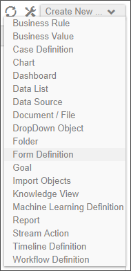
This will open the Form definition window. Leave the dropdown control that says “Use Online Form Designer” set to its default value. In the “Form Name” text box, enter the name for the new Form. You may also opt to enter a description of the Form’s purpose in the “Description” text box. BP Logix recommends as a best practice that you enter a description. This helps make it easier for others to see the Form’s purpose without having to open the form. For the purpose of this walk-through, we will name the form “Get/Push SharePoint Documents”, and fill out the description as shown below.
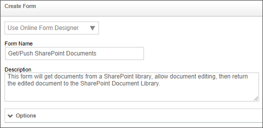
Once you have filled out the form definition fields, click the “OK” button to save your definition. You will immediately be taken to the “Edit” tab of the Form’s definition to design the form using the Online Form Designer. For this walk-through, we are going to build a form that looks something like the example below.
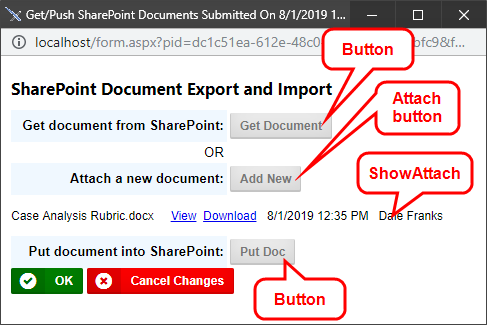
It’s not important for the purposes of this walk-through that you take a lot of time to format the form template to look like the example above. What is important, though, is to see that to build the form, we are going to need to place four controls on the page: two button controls and two attachment controls. The two buttons at the bottom of the form that are labeled “OK” and “Cancel Changes” are placed on the finished form automatically by Process Director, so you can ignore those buttons for now. The rest of the template can be formatted however you’d like, just be sure to leave places to insert the four controls we will be adding.
Since we are going to need to add a couple of buttons to the form, we will need to select “Actions >> Button” from the menu to add each button.
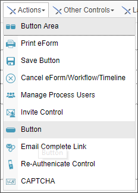
Place the cursor on the page at the point you’d like the “Get Doc” button to appear, then select the button control from the menu. This will place a blank button on the Form template page at the location of your text cursor, and bring up the button’s Properties dialog box.
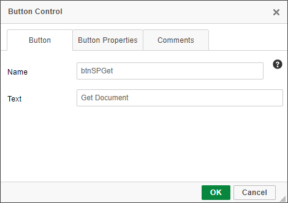
In the “Name” text box, type the name you want for this button. The name shouldn't contain any spaces, and it’s best to use a name that logically identifies the button’s function. In the “Text” text box, type the text that you’d like to appear as the button’s label on the form. Once you’re finished, clicking the OK button will close the dialog box and apply the settings to the button.
You will need to repeat these steps once more to add the other button we will need. For the sample project we’re using in this document, the following button properties are used:
|
BUTTON |
NAME |
TEXT |
|---|---|---|
|
Get documents from SharePoint |
btnSPGet |
Get Doc |
|
Put document into SharePoint |
btnSPPut |
Put Doc |
Once the buttons have been placed on the template page, and the properties have been filled out, we must add the attachment controls. First, we will add the “Attach” button control that will allow us to attach a new document to the form, in case we’d like to upload a document into the SharePoint document library from our computer. Place your cursor at the desired place for the “Attach Objects” control, then select “Attachments >> Attach Objects”.
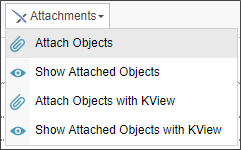
Once the blank control has been added to the page, the Properties dialog box will open.
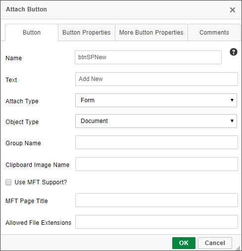
On the properties dialog box, type in the appropriate values in the “Name” and “Text” text boxes, just as you did for the buttons. Set the “Attach type” to “Form”, and the “Object Type” to “Document”. When you are finished, click the OK button to close the dialog box and apply the properties.
Finally, we will need to add the control that displays the document attachments that will be associated with the form when we get them from SharePoint, or the new documents that we want to add to the SharePoint document library. Place your cursor in the spot where you’d like to display the document attachments control, then select “Attachments >> Show Attached Objects”. This will insert the “Show Attached Objects” control into the page.
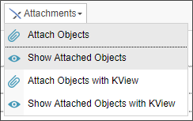
Once, again, the control will be placed in the selected location, and the Properties dialog will appear.
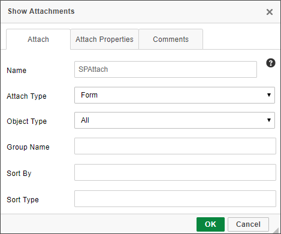
Type in a logical name for the control in the “Name Dialog Box”. Since we won't need to use a Workflow or Timeline for this sample, Change the “Attach Type” dropdown to “Form” in order to show objects attached to the Form, rather than to a process. Finally, check the “Show Edit” check box in the Attach Properties tab. This will show an edit link for the attached documents that will allow us to use Process Director’s check in/check out functionality to edit the attachments, which will provide us with the history and versioning functions for editing the attachment from Process Director. When you are finished, click the OK button to close the dialog box.
Our Form template should now be finished. Save and close the Form template, and go back to the form definition window.
We will need to set the SharePoint Custom Tasks for the form’s two buttons, so, from the Properties screen, click the Custom Task Event Mapping tab. From this tab, we will add the two SharePoint Custom Tasks that will be called by the buttons we placed on the Form template. When we are finished, the Custom Task setup in this tab will look much like the image below.
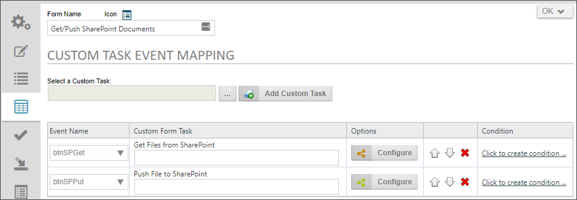
At the moment, however, neither of the two Custom Tasks shown above appear on your screen, so let’s add them.
First, click on the Build button at the top of the tab panel, which is labeled “…”, and is placed to the immediate left of the “Add Custom Task” button. Clicking on the Build button will open the Choose Custom Tasks dialog box. This window displays all of the Custom Tasks that are available to you. For the first Custom Task, select “SharePoint”, then select “Get Files from SharePoint”.

Once you’ve made the selection of the Custom Task, the dialog box will close, and the text box to the left of the build button will now have the words “Get Files from SharePoint” displayed. You can now click the “Add Custom Task” button. This will add the first Custom Task to the Task List.
To configure this task, we first have to select the button that will run the task. From the dropdown control in the “Event Name” column of the Custom Task list, select “btnSPGet”. Next, click the button labeled “Configure” that is located in the “Options” column of the Custom Task list. This will open the configuration dialog box for the Custom Task.
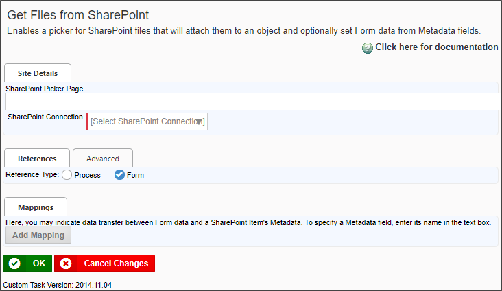
In the “Site Details” section’s “SharePoint Picker Page” text box, type in the Picker Page URL. This is the URL of the Picker Page you created in the first section of this walk-through. This is the SharePoint page that will display the document library from which you'll select documents to attach to the form. Next, select the SharePoint instance you want to use from the “SharePoint Connection” dropdown. Finally, in the “References” section, select the “Form” option button in the “Reference Type(s)” option list. Click “OK” to close the dialog box and apply your settings. The first Custom Task is now configured.
To add the next Custom Task, click the Build button again. This time, select the “Push File to SharePoint” Custom Task from the Choose Custom Tasks dialog box. This will close the dialog box and add the “Push File to SharePoint” into the text box next to the Build Button. Click the “Add Custom Task” button to add another row to the Custom Task list.
On the second row of the Custom Task list, select “btnSPPut” from the dropdown control in the “Event Name” column. Then click the Configure button to open the dialog box for the Push File to SharePoint Custom Task.
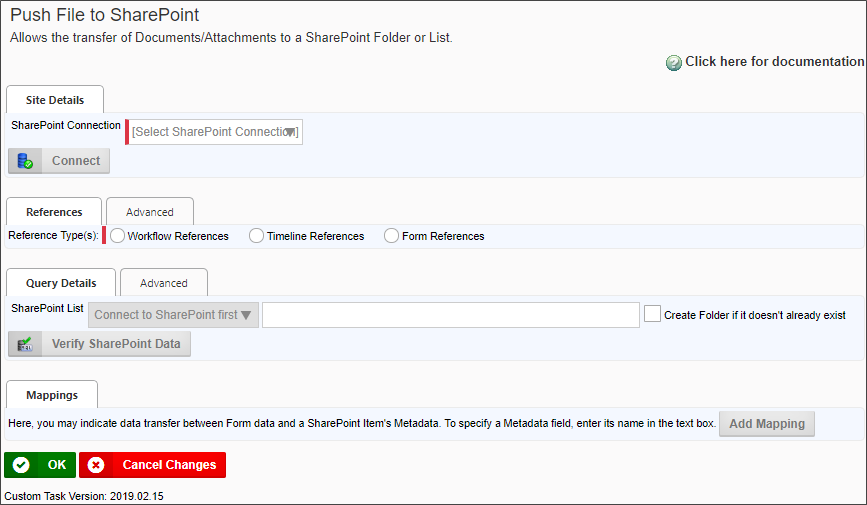
In the “Site Details” section’s “SharePoint Connection” dropdown, select the SharePoint instance where the document will be pushed. Then, select the “Form References” reference type from the references section. Next chose the list you want to use from the “SharePoint List” dropdown. You can also type in the path to the list if you’d like. This also allows you to create a new path by typing the path into the text box, then checking the “Create Folder if it doesn’t already exist” check box. Process Director will create the path location in SharePoint for you automatically. Now, click the “Advanced” tab for the Query Details section. Set the “Action if File exists” dropdown to “Check in new version”, and the “Handling Documents with SharePoint links” dropdown to “Update SharePoint Document, if available”. Once you have done this, click the “OK” button to close the dialog box and save your configuration settings for the Custom Task.
You should now be back at the Properties Pane for the Form Definition. Click the “Update” button to save the configuration changes you’ve made. Once you have done so, you’re now ready to test your form.
Run the form by clicking the “Run” button located at the top right of the Form definition page. This will open your newly-completed Form.
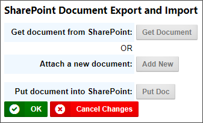
Notice that the “Show Attached Objects” control is hidden. It won’t display until you’ve actually attached a document to the form, so let’s attach one by clicking the button labeled “Get Doc”. This will open the SharePoint Picker Page you specified in the configuration for the Custom Task.

From the picker page, select a document to import into Process Director by selecting the check box on the left side of the document’s row in the document list. See the image above for an example of a selected document. Once you’ve selected the document you want, click the button labeled “Add Selected Items to Process Director”. This will transfer the document to Process Director, and the “Show Attached Objects” control will appear, showing the document you’ve attached.
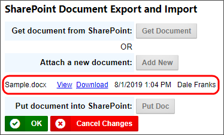
At this point, you can send the document right back to SharePoint by simply clicking the “Put Doc”. If the push is successful, a success notice will be displayed at the top and bottom of the form.

Of you were to go into SharePoint and view the documents history, you'd see that Process Director not only pushed the document back to SharePoint, but the document has also been versioned in SharePoint as well.
Click “OK” to close and save the Form.
You can also add a brand new document to SharePoint by opening a new instance of the Form, then clicking the “Add New” button. This will open the standard File dialog box from which you can browse through your file system to select the document you want to push to SharePoint. Once you have selected the document, it will appear in the “Show Attached Objects” control.
Once again, you can click the “Put Doc” button to push the new document to SharePoint.
Once you have a document attached to the Form, you can edit it from Process Director, using Process Director’s built-in checkout and versioning system. There is an “Edit” link for each document in the “Show Attached Objects” control. If you click the “Edit” link Process Director will open the Edit Document dialog box.
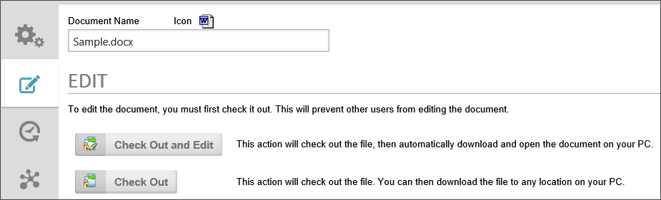
This process is identical to the process for checking out and editing the Form template we created earlier in this document. You can check the document out, edit it, and check it back in. Once the document is checked back in, the edited document is now the version attached to the Form.
Once again, you can push the edited document back to SharePoint by clicking the “Put Doc” button on the Form.